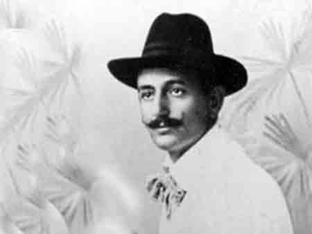

Slike


Aleksa Šantić
Rođen je u Mostaru, od oca Rista i majke Mare, gde je proveo većinu života. Otac mu je umro u ranom detinjstvu, pa je živeo u porodici strica Miha zvanog „Adža“. Imao je dva brata, Jeftana i Jakova, i jednu sestru Persu, dok mu je druga sestra, Zorica, umrla još kao beba. Pošto je živeo u trgovačkoj porodici, ukućani nisu imali dovoljno razumevanja za njegov talenat. Završio je trgovačku školu u Trstu i Ljubljani, potom se vratio u Mostar. Iz Trsta se vratio u Mostar 1883. godine i tu zatekao „neobično mrtvilo“, koje je bilo posledica „nedavnog ugušenog hercegovačkog ustanka protiv Austrije“, kako piše o njemu Vladimir Ćorović.[1] Bio je „prvo vreme prilično povučen“, vodio knjige u očevoj trgovini i čitao „listove i knjige do kojih je mogao u Mostaru doći“. Nekoliko godina kasnije započeo je svoj književni i društveni rad.
Najveća dela stvarao je krajem 19. i početkom 20. veka. Uzori su mu bili srpski pisci Vojislav Ilić i Jovan Jovanović Zmaj, a od stranih je najviše poštovao Hajnriha Hajnea. U njegovim pesmama ima emocionalnog bola, rodoljublja, ljubavne čežnje i prkosa za nacionalno i socijalno ugrožen srpski narod.
1887. postao je saradnik „Goluba“, zatim „Bosanske vile“, „Nove Zete“, „Javora“, „Otadžbine.“ Bio je 1888. osnivač i predsednik Srpskog pevačkog društva „Gusle“, koje uzima za program negovanje pesme i razvijanje nacionalne svesti. Zatim je izabran za prvog potpredsednika mostarskog pododbora „Prosvete“. Godine 1896. kada je pokrenuta „Zora“ bio je jedan od njenih prvih urednika.
902. otišao je u Ženevu, ali je tamo jedva „izdržao tri nedelje; u naivnoj pesmi „Ja ne mogu ovde“ on je prostosrdačno zavapio kako ne može da podnese tuđinu“. 1907. Mostar ga je izabrao „kao jednog od svoja četiri predstavnika“ za prvu skupštinu Narodne organizacije. 1908. je „počeo da ozbiljno poboljevati, najpre od kamena u bubrezima, a posle, iza Svetskog rata, od toboparalize.“ „Za vreme aneksione krize bio je, sa Svetozarom Ćorovićem i Nikolom Kašikovićem, prebegao u Italiju i stavio se na raspoloženje srpskoj vladi, kao što će to ponoviti i 1912. godine, na početku Balkanskog rata“
U toku Prvog svetskog rata zatvoren je kao talac i „u dva puta ponavljanoj parnici“ optuživan zbog svojih pesama. Po završetku rata izabran je u Mostaru za člana Srpskog odbora.
Za vreme njegovog života književna kritika je istakla dva „osnovna i jaka“ osećanja u njegovoj poeziji. Prvo osećanje je „žarka ljubav prema svome narodu“. Od početka to osećanje javlja se, uglavnom, u tri vida: kao ponos junačkom prošloću, kao protest protiv mučne sadašnjosti i kao vera u bolju budućnost do koje će se doći kroz borbu i pobedu koja će predstavljati vaskrsnulu prošlost.
Tokom života je objavio veliki broj pesama, a od dela se izdvajaju: „Hasanaginica“, „Na starim ognjištima“, „Anđelija“, „Nemanja“ i „Pod maglom“. Najpoznatije njegove pesme su: „Emina“ (1903), „Ne vjeruj“ (1905), „Ostajte ovdje“ (1896), „Pretprazničko veče“ (1910), „Što te nema?“ (1897), „Veče na školju“ (1904), „O klasje moje“ (1910), „Moja otadžbina“ (1908).
Emina
Sinoć, kad se vratih iz topla hamama,
Prođoh pokraj bašte staroga imama;
Kad tamo, u bašti, u hladu jasmina,
S ibrikom u ruci stajaše Emina.
Ja kakva je, pusta! Tako mi imana,
Stid je ne bi bilo da je kod sultana!
Pa još kad se šeće i plećima kreće…
– Ni hodžin mi zapis više pomoć neće!…
Ja joj nazvah selam. Al’ moga mi dina,
Ne šće ni da čuje lijepa Emina,
No u srebren ibrik zahitila vode
Pa po bašti đule zalivati ode;
S grana vjetar duhnu pa niz pleći puste
Rasplete joj one pletenice guste,
Zamirisa kosa ko zumbuli plavi,
A meni se krenu bururet u glavi!
Malo ne posrnuh, mojega mi dina,
No meni ne dođe lijepa Emina.
Samo me je jednom pogledala mrko,
Niti haje, alčak, što za njome crko’!…
Ne vjeruj
Ne vjeruj u moje stihove i rime
Kad ti kažu, draga, da te silno volim,
U trenutku svakom da se za te molim
I da ti u stabla urezujem ime-
Ne vjeruj! No kasno, kad se mjesec javi
I prelije srmom vrh modrijeh krša,
Tamo gdje u grmu proljeće leprša
I gdje slatko spava naš jorgovan plavi,
Dođi, čekaću te! U časima tijem,
Kad na grudi moje priljubiš se čvršće,
Osjetiš li, draga, da mi tijelo dršće,
I da silno gorim ognjevima svijem,
Tada vjeruj meni, i ne pitaj više!
Jer istinska ljubav za riječi ne zna;
Ona samo plamti, silna, neoprezna,
Niti mari, draga, da stihove piše!